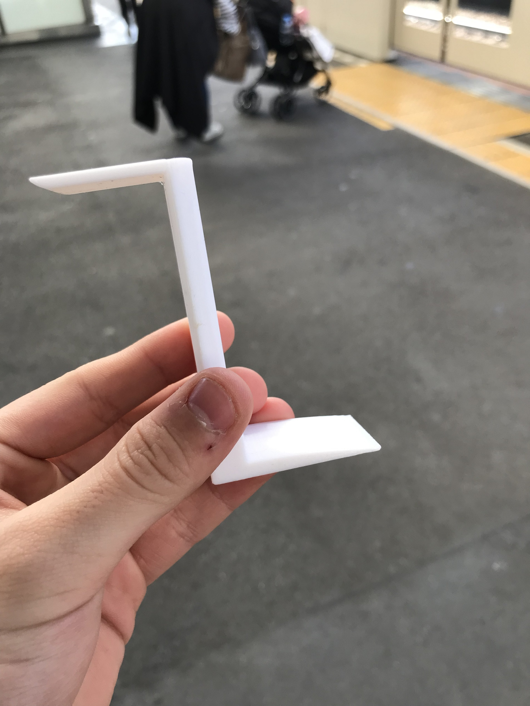

デジタルファブリケーション。五、六回。
design 4 others
私たちの班は電車の中で、3歳くらいの女の子とベビーカーの幼児を連れた東南アジア系の親子に出会った。
その為に我々は、揺れる車内でも安定して子どもの面倒をみることを容易にさせるための道具を考案した。
チンくんの例
私は、ベビーカーのストッパーとマタニティバックを置くことが可能な台を考えた。
そこからしばらくその縮みバージョンを手で持っているとなんだか安心することがわかった。
まるで、ハンドスピナーのような安心感だった。
そこで方向転換し、むしろ子どもをおちつかせるような手持ちぶたさーを開発した。
その為に我々は、揺れる車内でも安定して子どもの面倒をみることを容易にさせるための道具を考案した。
チンくんの例
私は、ベビーカーのストッパーとマタニティバックを置くことが可能な台を考えた。

しかしながら、縮尺モデルとして出力したため、実際には使えないモノとなってしまった。そこからしばらくその縮みバージョンを手で持っているとなんだか安心することがわかった。
まるで、ハンドスピナーのような安心感だった。
そこで方向転換し、むしろ子どもをおちつかせるような手持ちぶたさーを開発した。